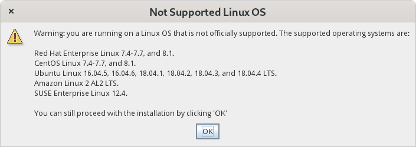

最近有點時間可以回去玩 Xilinx 的板子，於是想要把 Vivado 升級到 2020.1 的版本，結果彈出歡迎視窗就安裝不了了 orz
來紀錄一下非圖形化的安裝方式。
問題紀錄
到 Xilinx - Downloads 下載 Vivado 2020.1 的 Xilinx Unified Installer 2020.1: Linux Self Extracting Web Installer 後，會得到以下檔案
Xilinx_Unified_2020.1_0602_1208_Lin64.bin
我們將其使用 chmod 獲得執行權限並執行它
coldnew@gentoo ~ $ chmod +x Xilinx_Unified_2020.1_0602_1208_Lin64.bin coldnew@gentoo ~ $ ./Xilinx_Unified_2020.1_0602_1208_Lin64.bin
然後因為我使用的是 Gentoo Linux, 不被支援是可以預期的狀態，此時安裝程式跳出了這個視窗

然後接下來點選 OK 後， console 就秀出以下錯誤，並且再也沒有新的安裝視窗出來了!!
coldnew@getnoo ~ $ ./Xilinx_Unified_2020.1_0602_1208_Lin64.bin
Verifying archive integrity... All good.
Uncompressing Xilinx Installer.......................................................................
Exception in thread "SPLASH_LOAD_MESSAGE" java.lang.IllegalStateException: no splash screen available
at java.desktop/java.awt.SplashScreen.checkVisible(Unknown Source)
at java.desktop/java.awt.SplashScreen.getBounds(Unknown Source)
at java.desktop/java.awt.SplashScreen.getSize(Unknown Source)
at com.xilinx.installer.gui.H.run(Unknown Source)
Exception in thread "main" java.lang.IllegalStateException: no splash screen available
at java.desktop/java.awt.SplashScreen.checkVisible(Unknown Source)
at java.desktop/java.awt.SplashScreen.close(Unknown Source)
at com.xilinx.installer.gui.G.b(Unknown Source)
at com.xilinx.installer.gui.InstallerGUI.G(Unknown Source)
at com.xilinx.installer.gui.InstallerGUI.e(Unknown Source)
at com.xilinx.installer.api.InstallerLauncher.main(Unknown Source)
好吧，誰叫你要用不被支援的 Linux Distro 呢，只好來使用指令方式安裝了
解壓縮到資料夾
從安裝程式的 help 可以看到我們可以先將安裝程式解壓縮到某個資料夾內
coldnew@getnoo ~ $ ./Xilinx_Unified_2020.1_0602_1208_Lin64.bin -h
Makeself version 2.1.5
1) Getting help or info about ./Xilinx_Unified_2020.1_0602_1208_Lin64.bin :
./Xilinx_Unified_2020.1_0602_1208_Lin64.bin --help Print this message
./Xilinx_Unified_2020.1_0602_1208_Lin64.bin --info Print embedded info : title, default target directory, embedded script ...
./Xilinx_Unified_2020.1_0602_1208_Lin64.bin --lsm Print embedded lsm entry (or no LSM)
./Xilinx_Unified_2020.1_0602_1208_Lin64.bin --list Print the list of files in the archive
./Xilinx_Unified_2020.1_0602_1208_Lin64.bin --check Checks integrity of the archive
2) Running ./Xilinx_Unified_2020.1_0602_1208_Lin64.bin :
./Xilinx_Unified_2020.1_0602_1208_Lin64.bin [options] [--] [additional arguments to embedded script]
with following options (in that order)
--confirm Ask before running embedded script
--noexec Do not run embedded script
--keep Do not erase target directory after running
the embedded script
--nox11 Do not spawn an xterm
--nochown Do not give the extracted files to the current user
--target NewDirectory Extract in NewDirectory
--tar arg1 [arg2 ...] Access the contents of the archive through the tar command
-- Following arguments will be passed to the embedded script
因此我可以用以下方式將其解壓縮到 xilinx-installer 這個資料夾去
coldnew@getnoo ~ $ ./Xilinx_Unified_2020.1_0602_1208_Lin64.bin --target xilinx-installer --noexec Creating directory installer Verifying archive integrity... All good. Uncompressing Xilinx Installer........................
進入到 xilinx-installer 資料夾，可以看到 xsetup 這個檔案，即是原本安裝程式解壓縮後會執行的檔案
coldnew@getnoo ~/xilinx-installer $ ls bin data lib tps xsetup
手動安裝
下一步就是照原本 Vivado 安裝程式的流程，先進行使用者帳號驗證、選擇安裝程式、平台這樣一步一步的往下走
我們首先先進行帳號驗證，這是為了讓我們可以登入 Xilinx 網站順利下載缺失的安裝檔用
coldnew@getnoo ~/xilinx-installer $ ./xsetup -b AuthTokenGen Running in batch mode... Copyright (c) 1986-2020 Xilinx, Inc. All rights reserved. INFO : Internet connection validated, can connect to internet. INFO : In order to generate the authentication token please provide your Xilinx account User ID and password. User ID: your-user-id@gmail.com Password: INFO : Generating authentication token... INFO : Saved authentication token file successfully, valid until 06/28/2020 07:25 下午
完成帳號驗證後，接下來就是產生設定檔，紀錄我們要安裝哪些東西，在這裡我選擇 Vitis 這樣它就會順便幫我安裝 Vivado 到系統
coldnew@getnoo ~/xilinx-installer $ ./xsetup -b ConfigGen Running in batch mode... Copyright (c) 1986-2020 Xilinx, Inc. All rights reserved. INFO : Log file location - /home/coldnew/.Xilinx/xinstall/xinstall_1592738839383.log Select a Product from the list: 1. Vitis 2. Vivado 3. On-Premises Install for Cloud Deployments 4. BootGen 5. Lab Edition 6. Hardware Server 7. Documentation Navigator (Standalone) Please choose: 1 INFO : Config file available at /home/coldnew/.Xilinx/install_config.txt. Please use -c <filename> to point to this install configuration.
注意到上面產生了一個設定檔案在 ${HOME}/.Xilinx/install_config.txt ，這邊設定檔請根據你自己的電腦位置修改，我們需要這個設定檔來完成下一步的安裝，如果你有需要的話也可以修改一下設定檔，移除不需要安裝的東西，設定檔的內容大致如下
#### Vitis Unified Software Platform Install Configuration #### Edition=Vitis Unified Software Platform Product=Vitis # Path where Xilinx software will be installed. Destination=/tools/Xilinx # Choose the Products/Devices the you would like to install. Modules=Zynq UltraScale+ MPSoC:1,DocNav:1,Virtex UltraScale+ HBM:1,Virtex UltraScale+ 58G:1,Virtex UltraScale+ 58G ES:0,Kintex-7:1,Virtex UltraScale+:1,Zynq-7000:1,Kintex UltraScale+:1,Model Composer:0,Spartan-7:1,Install devices for Alveo and Xilinx edge acceleration platforms:1,Kintex UltraScale:1,Virtex UltraScale:1,Engineering Sample Devices for Custom Platforms:0,Zynq UltraScale+ RFSoC:1,Versal AI Core Series ES1:0,System Generator for DSP:0,Versal Prime Series ES1:0,Artix-7:1,Virtex-7:1,Virtex UltraScale+ HBM ES:0,Zynq UltraScale+ RFSoC ES:0 # Choose the post install scripts you'd like to run as part of the finalization step. Please note that some of these scripts may require user interaction during runtime. InstallOptions= ## Shortcuts and File associations ## # Choose whether Start menu/Application menu shortcuts will be created or not. CreateProgramGroupShortcuts=1 # Choose the name of the Start menu/Application menu shortcut. This setting will be ignored if you choose NOT to create shortcuts. ProgramGroupFolder=Xilinx Design Tools # Choose whether shortcuts will be created for All users or just the Current user. Shortcuts can be created for all users only if you run the installer as administrator. CreateShortcutsForAllUsers=0 # Choose whether shortcuts will be created on the desktop or not. CreateDesktopShortcuts=1 # Choose whether file associations will be created or not. CreateFileAssociation=1 # Choose whether disk usage will be optimized (reduced) after installation EnableDiskUsageOptimization=1
接下來就是讓它進行安裝囉，這邊我將我的檔案裝到 /opt/Xilinx 去
coldnew@gentoo ~/xilinx-installer $ ./xsetup --batch Install --agree XilinxEULA,3rdPartyEULA,WebTalkTerms --location /opt/Xilinx --config "${HOME}/.Xilinx/install_config.txt"
Running in batch mode...
Copyright (c) 1986-2020 Xilinx, Inc. All rights reserved.
INFO : Log file location - /home/coldnew/.Xilinx/xinstall/xinstall_1592861224080.log
INFO : Internet connection validated, can connect to internet.
INFO : Authenticated user coldnew.tw@gmail.com successfully.
INFO : Installing Edition: Vitis Unified Software Platform
INFO : Installation directory is /opt/Xilinx/
Downloading files (23.70 GB / 30.20 GB) 3 h and 49 m(s) left at 592 KB/sec. /
Downloading files (30.20 GB / 30.20 GB) <1 minute left at 540 KB/sec. (Done)
It took 3 h and 36 m(s) to download files.
Installing files, 99% completed. (Done)
It took 32 minutes to install files.
INFO : Log file is copied to : /opt/Xilinx/.xinstall/Vitis_2020.1/xinstall.log
INFO : Installation completed successfully.For the platforms: please visit xilinx.com and review the "Getting Started Guide" UG1301
剩下就是等待檔案下載安裝完成就 ok 囉～
強制圖形化安裝的解法
後來在 Installing Vivado 2020.1 on Linux Mint 19 這篇文章看到另外的解決方案，可以讓安裝程式順利進入到圖形界面。
他是怎做的呢? 實際上安裝程式會去抓你系統的 /etc/os-release 和 /etc/lsb-release 這兩樣資訊，這點可以從 strace 來查證
coldnew@getnoo ~/xilinx-installer $ strace -f ./xsetup [pid 3743535] openat(AT_FDCWD, "/etc/lsb-release", O_RDONLY) = 3 [pid 3743644] openat(AT_FDCWD, "/etc/os-release", O_RDONLY <unfinished ...>
所以呀，我們就暫時把 /etc/os-release 替換成這樣
NAME="Ubuntu" VERSION="16.04.6 LTS (Xenial Xerus)" ID=ubuntu ID_LIKE=debian PRETTY_NAME="Ubuntu 16.04.6 LTS" VERSION_ID="16.04" HOME_URL="http://www.ubuntu.com/" SUPPORT_URL="http://help.ubuntu.com/" BUG_REPORT_URL="http://bugs.launchpad.net/ubuntu/" VERSION_CODENAME=xenial UBUNTU_CODENAME=xenial
然後再把 /etc/lsb-release 換成這樣
DISTRIB_ID=Ubuntu DISTRIB_RELEASE=16.04 DISTRIB_CODENAME=xenial DISTRIB_DESCRIPTION="Ubuntu 16.04.6 LTS"
也就是偽裝成 Ubuntu 16.04 的樣子，這樣圖形版的安裝程式就可以跑啦 !!!!
安裝 USB driver (udev rules)
因為我們有用 JTAG 進行開發，所以安裝完成後，別忘記手動安裝需要用到的 udev rules。
假設這邊將 Vivado 安裝到以下路徑
VIVADO_INSTALL_DIR=/opt/Xilinx/Vivado/2020.1
則進入到 ${VIVADO_INSTALL_DIR}/data/xicom/cable_drivers/lin64/install_script/install_drivers 這邊，裡面有個 install_drivers 腳本可以執行，用 root 權限執行後就會把需要的 UDEV rules 安裝到系統去。
export VIVADO_INSTALL_DIR=/opt/Xilinx/Vivado/2020.1 cd ${VIVADO_INSTALL_DIR}/data/xicom/cable_drivers/lin64/install_script/install_drivers sudo ./install_drivers